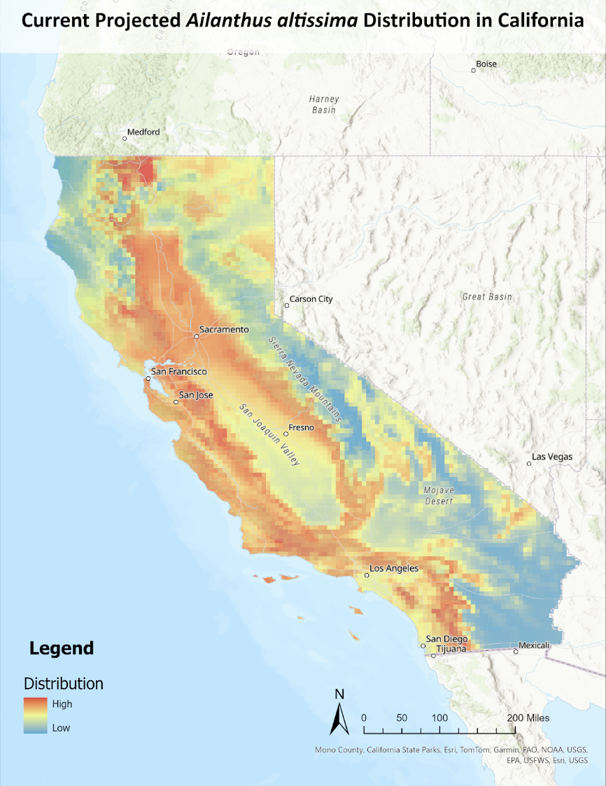
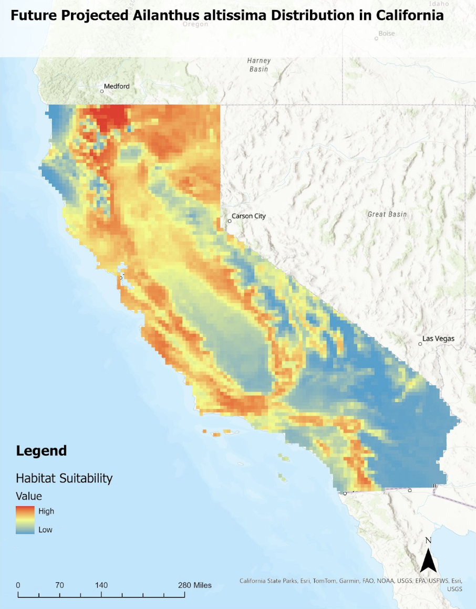

Ailanthus altissima: Strategies for Control and Management in California
Background:
The Tree of Heaven (Ailanthus altissima) is a fast-growing invasive species originally from China. Introduced as an ornamental plant, it has spread extensively beyond its native range, particularly throughout California. With prolific seed production and aggressive root suckering, A. altissima exhibits high reproductive capacity. Its allelopathic properties further enable it to outcompete and displace native plant communities (DiTomaso et al., 2013). This species thrives in a wide range of habitats but is especially common in disturbed areas, riparian zones, and foothills. Additionally, A. altissima demonstrates significant growth potential under warmer and drier conditions, suggesting it may expand further with climate change (Knüsel et al., 2019; Motti et al., 2021).

Problem:
Once A. altissima has been established in an area, it is difficult to remove and can alter ecosystem function. Herbicide application is often the most effective way to kill the root system, but successful eradication is not guaranteed, and repeated application is often necessary (DiTomaso et al., 2013). This can be costly. Therefore, it is crucial to understand the current and future distribution of A. altissima in California to prioritize areas for monitoring and removal.
Approach:
We integrated 1,000 presence records of Ailanthus altissima with seven climate variables to develop a MaxEnt species distribution model using Wallace in R. Occurrence data was obtained from GBIF. Given A. altissima’s sensitivity to temperature and precipitation, we selected bioclimatic variables at a 5-arcminute resolution, including annual mean temperature, mean diurnal range, maximum temperature of the warmest month, minimum temperature of the coldest month, annual precipitation, precipitation of the wettest month, and precipitation of the driest quarter.
To improve processing efficiency, we restricted occurrence data to the United States and applied a 2.5-degree buffer around all occurrences to define the background extent—excluding unsuitable areas (e.g., oceans) while capturing potentially suitable habitat based on the species’ current distribution. Model validation was performed using 1,000 background points spatially partitioned into four blocks (k=4).
Since our primary focus is A. altissima’s distribution in California, we projected the model onto a California-specific extent. To assess potential climate-driven range shifts, we also projected future distribution under the highest emissions scenario (SSP 585) for the 2041–2060 period.
Results:
Figures 1 and 2 suggest that Ailanthus altissima is likely to shift northeastward, with a new hotspot projected to emerge in the northeastern corner of California. Both current and future distribution models indicate a strong concentration of A. altissima in the Central Valley. Additionally, the species is predominantly found in and around urban centers, highlighting its preference for disturbed environments.


Conclusion:
Invasive control efforts should prioritize urban areas where Ailanthus altissima threatens local habitats and ecosystem functionality. We recommend targeted removal in these regions, paired with the reintroduction of native vegetation to restore ecological balance. This strategy would not only curb the species’ spread but also help mitigate urban climate challenges such as the heat island effect and stormwater runoff while enhancing biodiversity. Additionally, establishing an early detection and rapid response program in northeastern California would be crucial for preventing further expansion.
Future research should consider additional factors influencing A. altissima distribution, including road networks, land use patterns, and topography, to refine management strategies. Moreover, a balanced assessment of its ecological risks and potential benefits is needed to determine whether A. altissima could contribute to novel ecosystems in certain contexts (Sladonja et al., 2015). While the species may offer some advantages in highly altered environments, its aggressive spread requires careful regulation to prevent further ecological disruption.
References:
DiTomaso, J.M., Kyser, G.B., Oneto, S.R., Wilson, R.G., Orloff, S.B., Anderson, L.W., Wright, S.D., Roncoroni, J.A., Miller, T.L., Prather, T.S., Ransom, C., Beck, K.G., Duncan, C., Wilson, K.A., & Mann, J.J. (2013). Weed Control in Natural Areas in the Western United States. Weed Research and Information Center, University of California. 544 pp.
Knüsel, S., Conedera, M., Zweifel, R., Bugmann, H., Etzold, S., & Wunder, J. (2019). High growth potential of Ailanthus altissima in warm and dry weather conditions in novel forests of southern Switzerland. Trees, 33(2), 395–409. https://doi.org/10.1007/s00468-018-1785-x
Motti, R., Zotti, M., Bonanomi, G., Cozzolino, A., Stinca, A., & Migliozzi, A. (2021). Climatic and anthropogenic factors affect Ailanthus altissima invasion in a Mediterranean region. Plant Ecology, 222(12), 1347–1359. https://doi.org/10.1007/s11258-021-01183-9
Sladonja, B., Sušek, M., & Guillermic, J. (2015). Review on invasive tree of heaven (ailanthus altissima (mill.) Swingle) conflicting values: Assessment of its ecosystem services and potential biological threat. Environmental Management, 56(4), 1009–1034. https://doi.org/10.1007/s00267-015-0546-5